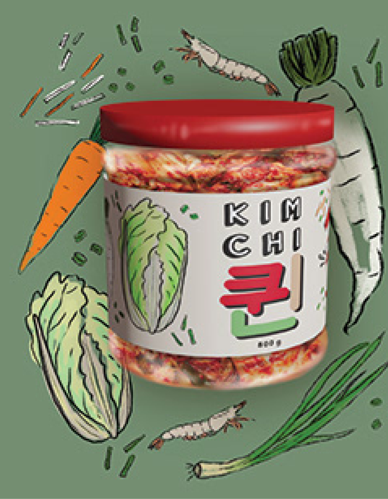

EATING KIMCHI...
GIVES YOU LOTS OF NUTRITION
Kimchi is full of beta-carotene and other antioxidant compounds that can help reduce the risk of serious health conditions.
IMPROVES DIGESTIVE HEALTH
Probiotics found in fermented food can help reduce the negative symptoms of many gastrointestinal disorders.

PROTECTS YOUR HEART
Probiotics have been shown to improve heart health by reducing cholesterol and inflammation.
SUPPORTS YOUR IMMUNE SYSTEM
The vitamin C found in kimchi can help boost your immune health.
IS RICH IN VITAMIN
The vitamin K helps your blood clot and keeps your bones from becoming brittle.